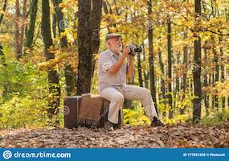
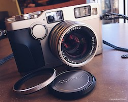
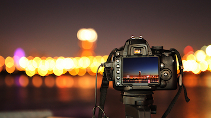
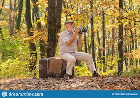
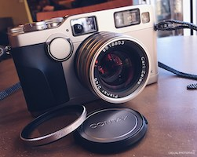
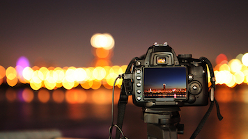

People become interested in photography – serious photography, not just the occasional snap or selfie – for many reasons. It might be a major life event, such as a new baby, a wedding,
or a special birthday. It might be that your phone’s
photo capabilities frustrate you enough that you want to get real about photography. Or perhaps photography just sounds interesting and
you want to try it out. Whatever the reason, photography is incredibly fun, plus it comes with a whole
host of benefits you probably haven’t considered. And that’s what this article will share:
the 9 reasons you should definitely start doing photography right now!